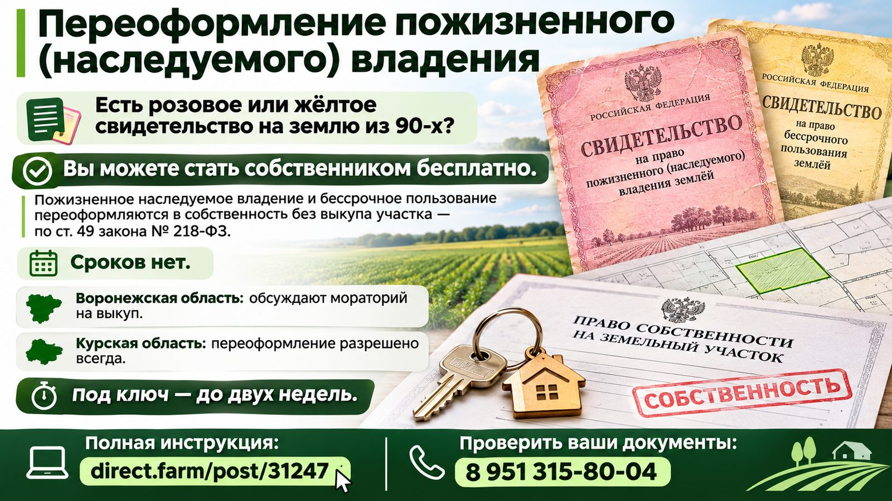
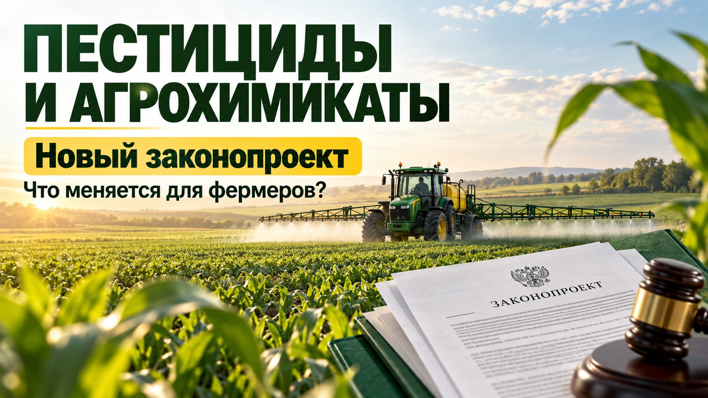
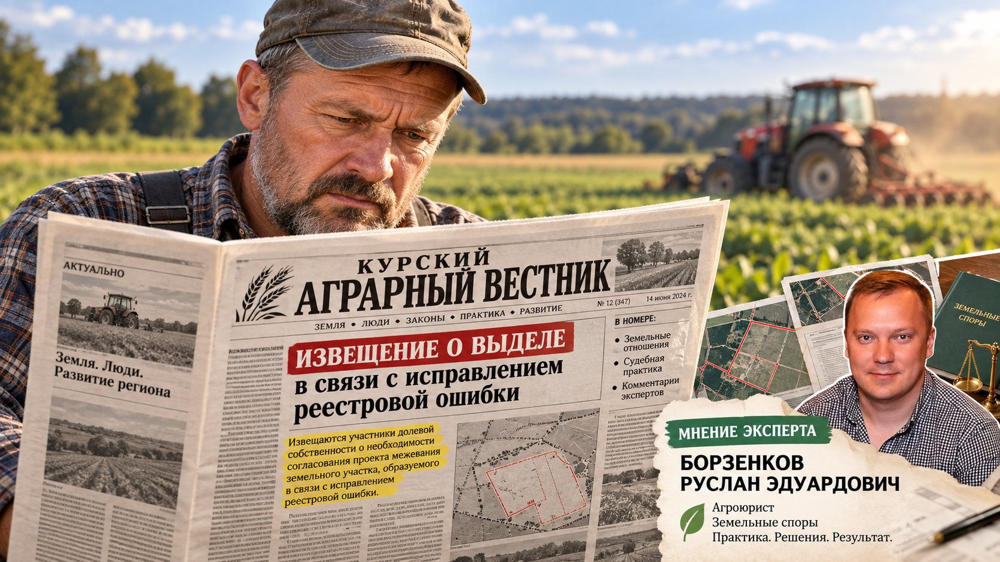

Блог
14 статей о земле, зерне и субсидиях — практика без «воды». Рядом с каждой статьёй — кнопка WhatsApp для быстрого вопроса.
Аренда навсегда: как перевести арендованный участок в собственность

Аренда сельхозземли тянется годами, а земля продолжает работать на арендатора. Закон это учитывает: после трёх лет добросовестной обработки участок можно выкупить без торгов, внеся плату по договору аренды (подпункт 9 пункта 2 статьи 39.3 ЗК РФ). Заявление подаётся в администрацию до окончания срока аренды.
Что проверяю перед подачей: действительность договора, отсутствие задолженности и споров, соответствие участка виду разрешённого использования. Комплект готовлю так, чтобы регистрация прошла с первого раза.
Обсудить в WhatsAppВзыскание стоимости урожая при самовольном занятии участка

Если сосед самовольно занял часть поля и снял урожай — это не «бытовая ссора», а статья 76 ЗК РФ: пострадавший вправе требовать возмещения убытков, включая стоимость урожая. Расчёт строится на реальной урожайности культуры и рыночных ценах — подтверждается актами обмера и экспертизой.
Упущенную выгоду доказать сложнее, но реально — через данные учёта хозяйства и статистику урожайности района. Чем раньше зафиксировано занятие, тем сильнее позиция в суде.
Обсудить в WhatsAppИзвещение о выделе под виду исправления реестровой ошибки

Распространённая схема: сосед подаёт проект межевания как «исправление реестровой ошибки», а фактически это подготовка выдела земельного участка в счёт доли. Отличие принципиальное: при выделе нужно полноценное согласование с участниками долевой собственности.
Если вам пришло такое извещение — проверьте, что именно отражено в проекте межевания: границы нового участка или только корректировка существующих. Срок на возражения — 30 дней со дня получения. Пропустили — оспорить можно, но уже через суд.
Обсудить в WhatsAppПереоформление пожизненного наследуемого владения (ПНВ)
Право пожизненного наследуемого владения больше не предоставляется, а существующие права нужно переоформить в собственность или аренду. Бессрочная «амнистия» на это действие действует по закону — но тянуть всё равно не стоит: без оформленных прав участок нельзя продать, передать по наследству и сложно защитить в споре.
Порядок простой: заявление в администрацию, правоустанавливающий документ на участок, выписка ЕГРН. Спорные случаи — если документы утрачены или участок с реестровой ошибкой — решаются через суд.
Обсудить в WhatsAppЧто предлагают? Общее собрание — онлайн? Разбор законопроекта № 1315992-8

Законопроект № 1315992-8 предлагает перевести часть процедур общих собраний участников долевой собственности в цифровую среду: очно-заочное и заочное голосование, дистанционное участие через Госуслуги.
Пока документ не принят, действуют прежние правила статьи 25 закона № 101-ФЗ «Об обороте земель сельскохозяйственного назначения». Следите за статусом законопроекта — а до этого собирайте собрания по классической схеме: извещение в СМИ, кворум, протокол.
Обсудить в WhatsAppПестициды и агрохимикаты: новый законопроект

Готовится новый закон о безопасном обращении пестицидов и агрохимикатов. Для фермеров это реестр разрешённых препаратов, более чёткие требования к журналам применения и декларированию обработок.
Практический вывод: ведите документацию по обработкам уже сейчас — при переходе на новые правила она станет основанием для проверок и защитой при претензиях соседей к запаху и качеству. Я помогаю выстроить документооборот, который не развалится при первой проверке.
Обсудить в WhatsAppСубсидии аграриям Курской области: что доступно осенью 2026 года
Основные инструменты поддержки на осень 2026 года: гранты для КФХ — до 30 млн ₽ на создание хозяйства и развитие семейных ферм, возмещение части затрат на технику и оборудование, льготный лизинг.
Дополнительно — отраслевые субсидии (растениеводство, животноводство) и региональные программы Курской области. Заявку готовлю под требования конкретной программы: смета, документы на землю и технику, отчётность. Отказ — не приговор, его оспаривают.
Обсудить в WhatsAppПокупатель прислал договор поставки зерна? 9 пунктов проверки

Типовые зерновые договоры пишутся под покупателя. Перед подписанием проверяю девять пунктов: цена и порядок расчёта, базис поставки, качество и влажность, санкции за отклонения по качеству, форс-мажор, порядок приёмки и отвеса, транспортные расходы, ответственность за просрочку, поручительство и предоплата.
Каждый пункт — это место, где фермер может потерять деньги. Если договор прислали по «шаблону» — не подписывайте сразу: бесплатный экспресс-аудит в WhatsApp покажет, где риски.
Обсудить в WhatsApp5 опасных условий в договоре с покупателем зерна
Пять условий, на которых чаще всего «падают» фермеры: одностороннее изменение цены покупателем; «беспроцентная отсрочка», которая фактически превращается в кредит; штрафы за недопоставку выше цены реализации; отгрузка «по звонку» без фиксации заявок; подсудность спора в арбитражный суд другого региона.
Каждое из этих условий — исправляется протоколом разногласий на этапе переговоров. Проверить договор до подписания дешевле, чем спорить после.
Обсудить в WhatsAppЧто делать, если Росреестр приостановил регистрацию

Приостановление — не отказ, а время на исправление: у ведомства и заявителя есть законный срок (до трёх месяцев). Первое действие — получить письменное основание приостановления и разобрать его по пунктам.
Дальше — по ситуации: доработка межевого плана, дополнительные документы, заявление об исправлении. Если причина необоснованная — обращение в апелляционную комиссию при Росреестре, а затем в суд. Затягивать нельзя: срок приостановления конечен, после него выносится отказ.
Обсудить в WhatsAppКак составить иск об установлении границ земельного участка
Иск об установлении границ — самый частый способ решить межевой спор. Основные документы: выписка ЕГРН, межевой план, объяснения соседей, заключение кадастрового инженера или судебной экспертизы.
Важный нюанс: такие споры подсудны суду по месту нахождения участка (исключительная подсудность, статья 30 ГПК РФ). Ошибка в подсудности — лишние месяцы. Иск готовлю с привязкой к конкретным координатам и доказательствами фактического владения.
Обсудить в WhatsAppСамовольное занятие земли: чем грозит и как узаконить
Самовольное занятие — административное правонарушение по статье 7.1 КоАП РФ: для граждан штраф от 1 до 1,5% кадастровой стоимости (не менее 5 000 ₽), для организаций — от 2 до 3% (не менее 100 000 ₽). Проверки проводят Россельхознадзор и Росреестр.
Выход есть: оформить участок в аренду, выкупить или обосновать пользование. Своевременное узаконивание дешевле штрафа — а если проверка уже пришла, помогаю выстроить позицию и снизить риск взыскания.
Обсудить в WhatsAppМежевание: когда обязательно и сколько стоит
Межевание обязательно при сделках с долями, выделе участка, спорах о границах и исправлении реестровых ошибок. Для «обычной» регистрации права оно формально не обязательно — но без него риск приостановления и споров с соседями резко растёт.
Стоимость зависит от площади и категории земель. Главное — проверять кадастрового инженера: квалификационный аттестат, членство в СРО, опыт именно с сельхозземлями. Некачественный межевой план — главная причина приостановлений.
Обсудить в WhatsAppВыдел земельной доли: пошаговая инструкция для пайщика
Семь шагов: 1) проверить право на долю в ЕГРН; 2) подготовить проект межевания; 3) согласовать с участниками долевой собственности; 4) опубликовать извещение; 5) отработать возражения; 6) поставить участок на кадастровый учёт; 7) зарегистрировать право собственности.
На каждом шаге есть свои сроки и подводные камни — от несоблюдения порядка извещения до споров о границах. Я веду весь цикл целиком, от проекта межевания до записи в ЕГРН.
Обсудить в WhatsApp